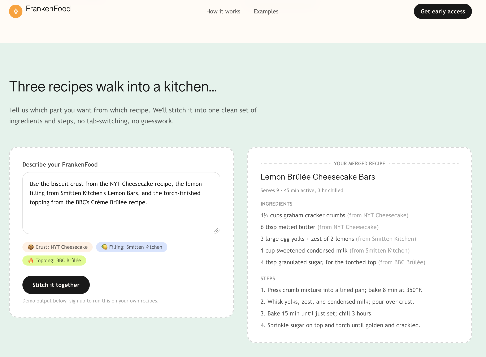
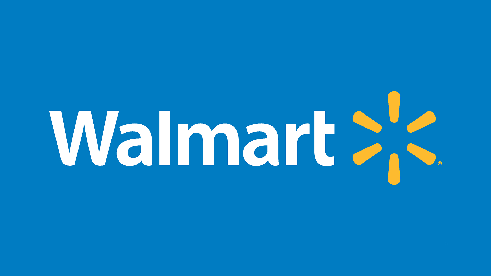
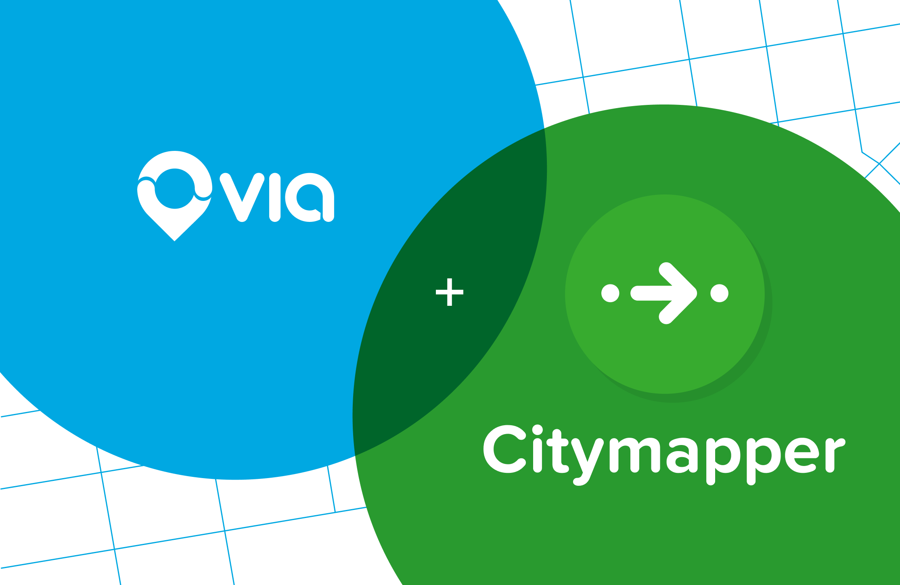
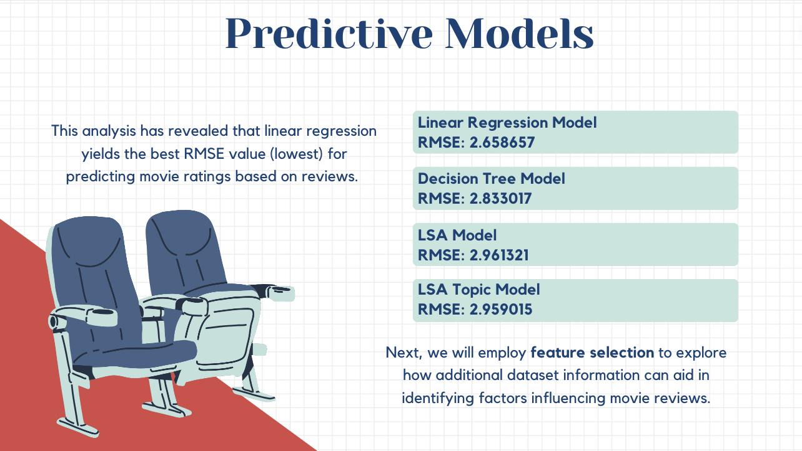
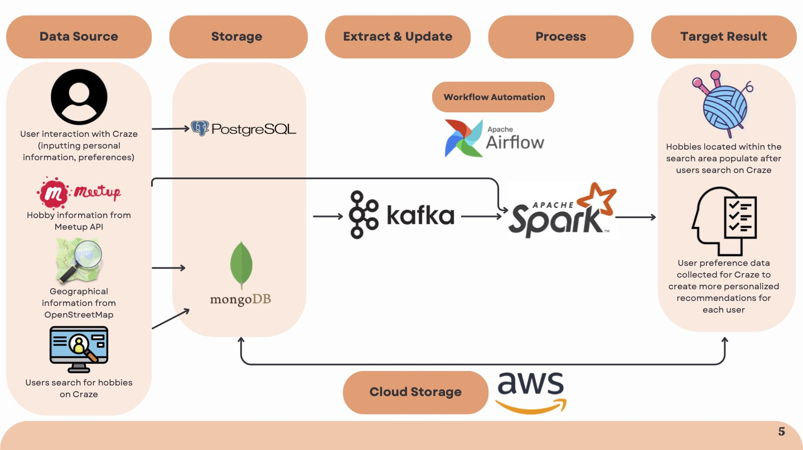
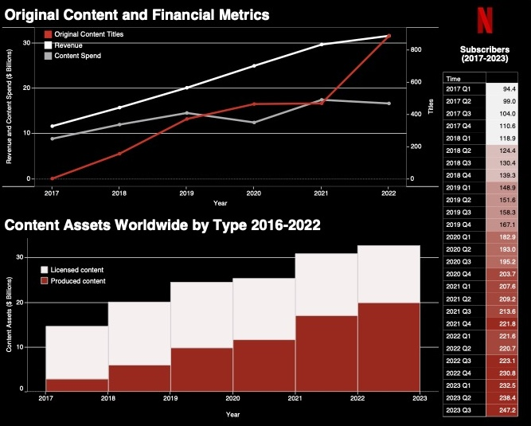
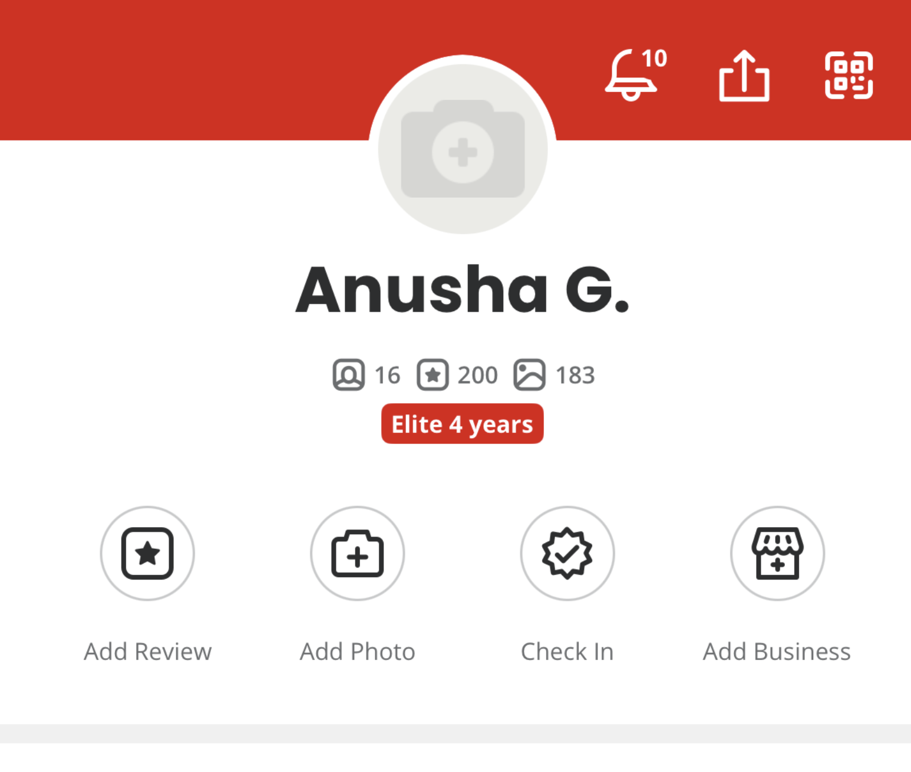
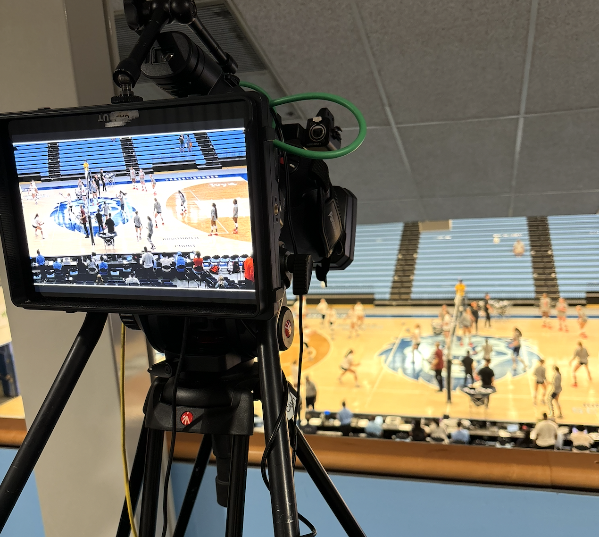
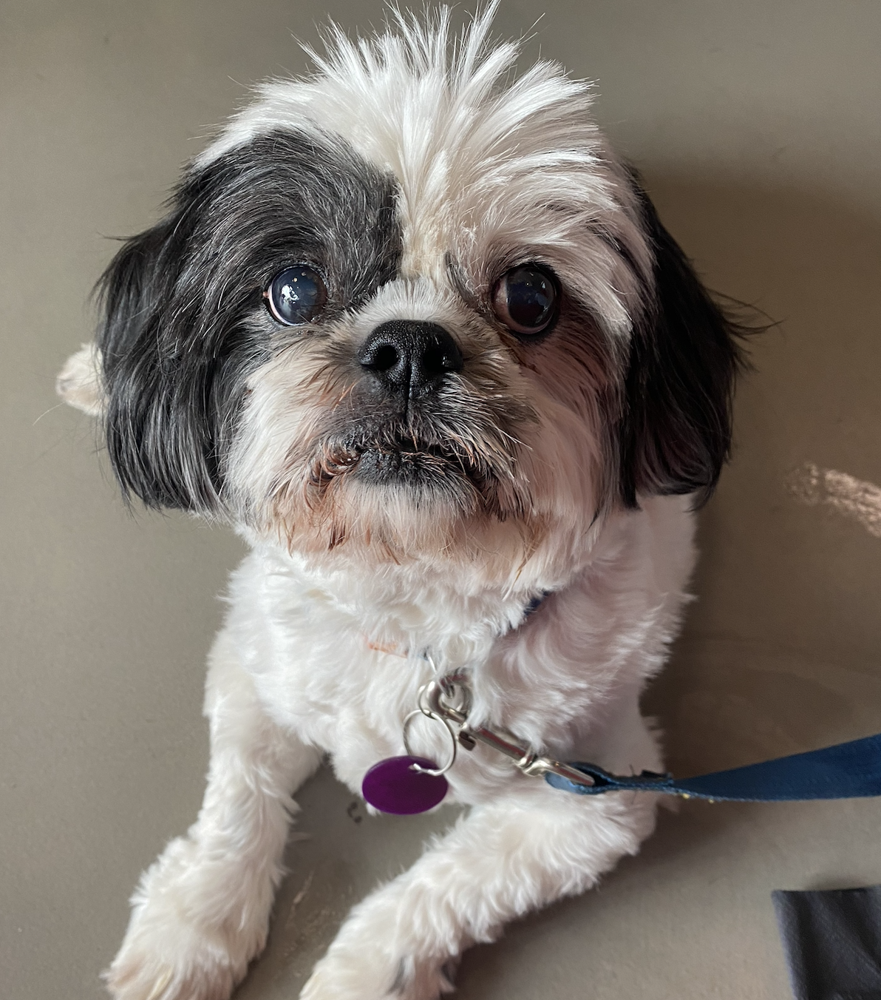
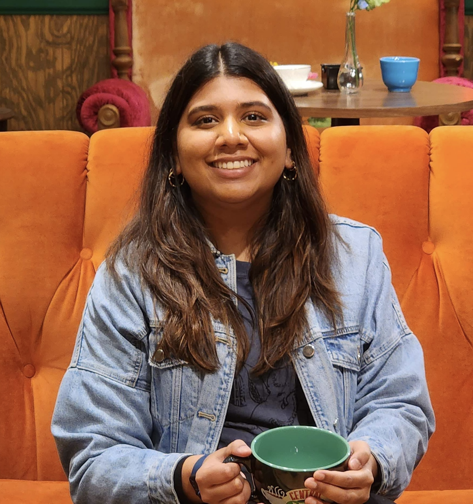

just for fun
Passion Projects
Stitching together any recipes you want
FrankenFood
A prototype that will allow you to stitch together the best parts of any recipes you want. Whether you don't have an ingredient for the frosting. Whether you just like the other flavors. FrankenFood will merge the recipes for you.

latest prototype
Be Your Own Recipe Developer
I built this when I wanted to bake my friend her ideal cake but needed 3 different recipes. I used AI to help me combine my shopping list and the recipes. Instead of going through this work, you can just use FrankenFood.
Tools
- HTML
- Prompt Engineering
- Claude Code
- Python
professional roles
Work Experience

Walmart Inc.
On the Search Ranking team as a Data Scientist, I deployed data pipelines and ML models that improved search engagement and relevance. I worked on predicting engagement with neural network models, eliminating position bias, and using SEO engagement data to enhance ranking.
- Python & SQL
- GCP
- Machine Learning
- Airflow Pipelines

Citymapper
As a Product Data Analyst at Citymapper, I managed data deployment for 8 US cities. This included integrating transit agency APIs, designing web scrapers for real-time data, and wrangling data from 100+ transit agencies.
- Python
- AWS
- APIs
- Git
school and independent work
Data Projects

IMDB's Predictive Power
A data exploration that predicts the audience ratings of a movie using audience reviews scraped from the IMDB website.
- R
- Python
- APIs
- Sentiment Analysis


A Database Business Pitch
A business pitch that identified a potential business called Craze that allows users to reserve hobby-based activities through a subscription model. The project focuses on what database structure would be best and implements a Flask application to demonstrate the use cases.
- Python (Flask)
- PostgreSQL
- PySpark
- MongoDB

Analysis of Netflix's Growth Opportunities
This project, built in Tableau, tells the story of Netflix's future growth opportunities through a series of visual narratives.
- Tableau
- Storytelling
outside of data
What I Get Up To
Outside of notebooks and dashboards, I'm usually building something with my hands instead of my keyboard.

Baking
Weekend experiments in the kitchen, from precise macaroon timelines to the occasional FrankenFood creation.

Food Reviews
I'm a Yelp Elite member, always on the hunt for a new favorite restaurant and happy to write up the results.

Camera Ops & AD, Columbia Sports
During my masters, I worked camera operations and as an assistant director for Columbia Sports, helping produce game broadcasts for local networks and ESPN+.

Volunteering
I split my volunteer time between local animal shelters and a local arts NGO, supporting their programs however I can.
about
About Me
I'm Anusha, a data enthusiast based in San Francisco. I'm passionate about leveraging data to drive business insights and improve user experiences. Outside of data, I love baking, movies, and crafting, a passion that shows up in projects like FrankenFood, my passion project for inventing fun foods out of unrelated recipes.
